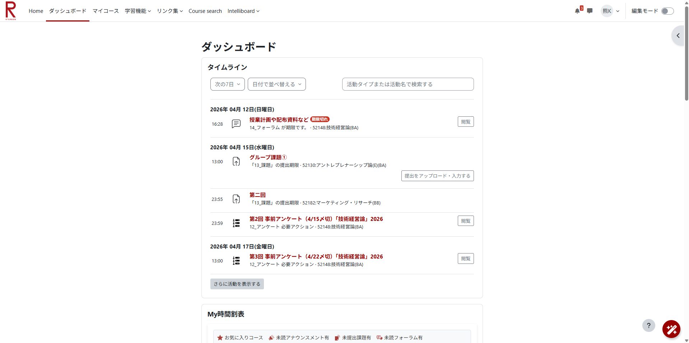
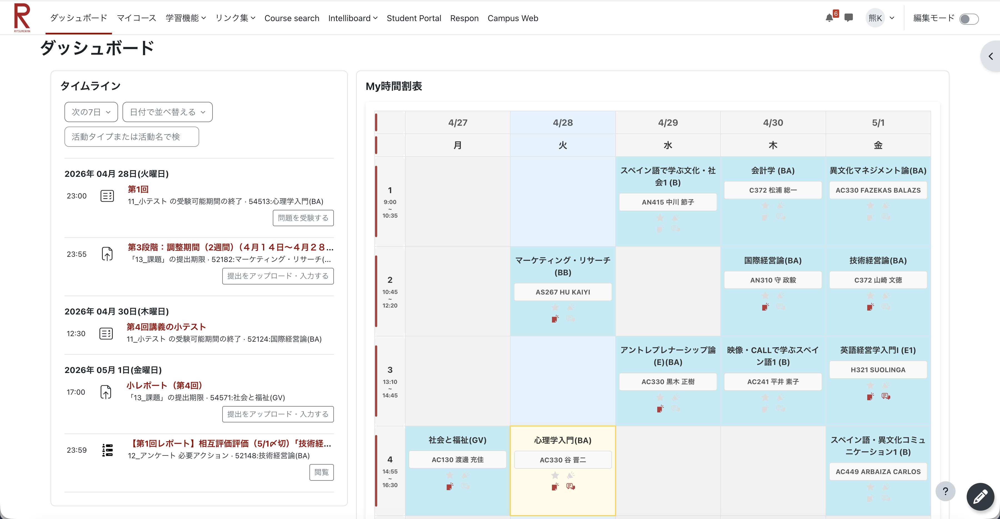
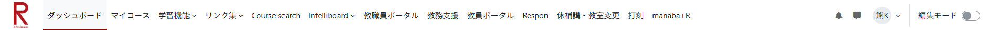
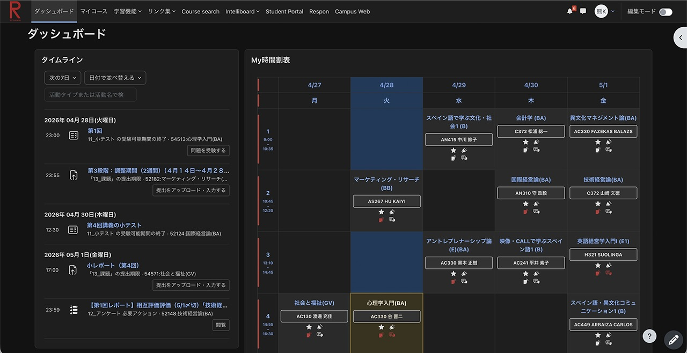

インストールしていただきありがとうございます！
Thank you for installing!
感谢您的安装！
설치해 주셔서 감사합니다!
¡Gracias por instalar!
「Extension for Moodle+R」は、2026年度から「manaba+R」に代わって立命館大学に新しく導入されたLMS「Moodle+R」をより使いやすくするための拡張機能です。
"Extension for Moodle+R" is an extension designed to improve the usability of "Moodle+R", the new LMS introduced at Ritsumeikan University starting in the 2026 academic year, replacing "manaba+R".
“Extension for Moodle+R” 是一款旨在改善“Moodle+R”易用性的扩展程序。该系统是立命馆大学从2026学年开始取代“manaba+R”引入的新学习管理系统（LMS）。
"Extension for Moodle+R"는 2026학년도부터 "manaba+R"을 대체하여 리츠메이칸 대학에 새롭게 도입된 LMS "Moodle+R"을 더욱 사용하기 쉽게 만들어주는 확장 프로그램입니다.
"Extension for Moodle+R" es una extensión diseñada para mejorar la usabilidad de "Moodle+R", el nuevo LMS introducido en la Universidad de Ritsumeikan a partir del año académico 2026, en reemplazo de "manaba+R".
使い方
How to Use
使用方法
사용 방법
Cómo Usar
- 画面右上の パズルアイコン をクリックし、この拡張機能を右クリックしてピン留めしてください。
- ツールバーに追加されたアイコンをクリックするとメニューが開き、各機能をオン・オフできます。
- Click the puzzle icon in the top right corner of your browser, then right-click this extension to pin it.
- Click the pinned icon in your toolbar to open the menu, where you can toggle each feature on or off.
- 点击浏览器右上角的 拼图图标，然后右键单击此扩展程序将其固定。
- 点击工具栏中固定的图标即可打开菜单，您可以在其中开启或关闭各项功能。
- 브라우저 오른쪽 상단의 퍼즐 아이콘을 클릭한 다음, 이 확장 프로그램을 마우스 오른쪽 버튼으로 클릭하여 고정합니다.
- 도구 모음에 고정된 아이콘을 클릭하여 메뉴를 열면 각 기능을 켜거나 끌 수 있습니다.
- Haz clic en el icono de rompecabezas en la esquina superior derecha de tu navegador, luego haz clic derecho en esta extensión para fijarla.
- Haz clic en el icono fijado en tu barra de herramientas para abrir el menú, donde puedes activar o desactivar cada función.
機能の紹介
Features
功能介绍
기능 소개
Características
-
ベターレイアウト: 時間割を見やすくし、画面を広く使えます。
適用前

適用後
-
教職員モード: リボンに教職員向けのリンク（教職員ポータル、Responや打刻など）を直接アクセスできるように追加します。

- ホームスキップ: 使わないトップページをスキップして直接ダッシュボードに遷移します。
- 現在の授業をハイライト: 現在行われている授業のコマが時間割上でハイライト表示され、今受けている授業が一目でわかるようになります。
-
シラバス情報の自動取得:
Moodle'の授業ページに「シラバス」ボタンを追加し、ワンクリックでシラバスに直接アクセス。さらに、一度シラバスを開くだけで開講曜日・時限、担当教員、単位数、教室のデータを自動取得し、Moodleのコースページやダッシュボードからいつでも確認できるようにします。
またコースページ内の取得された教室の場所から地図にアクセスできます。
-
ダークモード: 目に優しい暗めの配色に変更します。

- フォーラム一括既読: フォーラムの画面に「すべて既読にする」ボタンを追加し、未読の投稿をワンクリックでまとめて既読にできます。
- 先生へのメッセージ（DM）ボタン: コースページのヘッダーに「DM」ボタンを設置し、クリックするだけでその授業の担当の先生へのメッセージ送信画面を開きます。
-
Better Layout: Makes the timetable easier to read and utilizes screen space more effectively.
BeforeAfter
- Staff Mode: Adds direct links to the ribbon for staff (Staff Portal, Respon, Timeclock, etc.).
- Home Skip: Skips the unused top page and redirects directly to the dashboard.
- Highlight Current Class: The current class slot is highlighted on the timetable, making it easy to see which class you are currently taking.
-
Auto-fetch Syllabus Information:
Adds a "Syllabus" button to Moodle course pages for one-click access. Furthermore, simply opening a syllabus
once will automatically fetch the schedule, teacher, credits, and room data, allowing you to
check them anytime from the Moodle course page or dashboard.
You can also access the campus map from the fetched room location on the course page.
- Dark Mode: Changes to a darker color scheme that is easier on the eyes.
- Mark Forum as Read: Adds a "Mark all as read" button to forum screens, allowing you to mark all unread posts as read with a single click.
- Direct Message (DM) Button: Places a "DM" button on the course page header. Clicking it opens the message composition screen for the instructor of that class.
-
优化布局: 让课表更易读，更有效地利用屏幕空间。
应用前应用后
- 教职工模式: 在功能区添加教职工专用链接（如教职工门户、Respon、打卡等）。
- 跳过首页: 跳过未使用的首页，直接跳转至仪表板。
- 高亮显示当前课程: 在课表上高亮显示正在进行的课程时段，让您一眼就能看出当前正在上的课。
-
自动获取教学大纲信息:
在 Moodle 的课程页面添加“教学大纲”按钮，一键直达大纲。此外，只需打开一次大纲，即可自动获取上课时间、授课教师、学分、教室数据，让您随时能从 Moodle
的课程页面或仪表板查看。
您还可以通过课程页面上获取的教室位置访问校园地图。
- 深色模式: 切换至较暗的配色方案，减轻眼部疲劳。
- 一键已读论坛: 在论坛屏幕添加“全部标记为已读”按钮，一键即可将所有未读帖子标记为已读。
- 发送消息 (DM) 按钮: 在课程页面顶部添加一个“DM”按钮。点击它即可打开向该课程讲师发送消息的编辑界面。
-
더 나은 레이아웃: 시간표를 읽기 쉽게 만들고 화면 공간을 더 효과적으로 활용합니다.
적용 전적용 후
- 교직원 모드: 교직원을 위한 직접 링크(교직원 포털, Respon, 근태 관리 등)를 리본에 추가합니다.
- 홈 건너뛰기: 사용하지 않는 시작 페이지를 건너뛰고 대시보드로 바로 이동합니다.
- 현재 수업 강조: 현재 진행 중인 수업 시간이 시간표에 강조 표시되어, 현재 듣고 있는 수업을 한눈에 볼 수 있습니다.
-
강의 계획서 정보 자동 가져오기:
Moodle 수업 페이지에 "강의 계획서" 버튼을 추가하여 한 번의 클릭으로 접근할 수 있습니다. 또한, 강의 계획서를 한 번 열기만 하면 수업 시간, 담당 교수, 학점, 강의실 데이터를 자동으로 가져와 Moodle 수업 페이지나 대시보드에서 언제든지 확인할 수 있습니다.
수업 페이지에서 가져온 강의실 위치를 통해 캠퍼스 맵에도 접속할 수 있습니다.
- 다크 모드: 눈을 편안하게 해주는 어두운 색상 구성으로 변경합니다.
- 포럼 모두 읽음: 포럼 화면에 "모두 읽음으로 표시" 버튼을 추가하여, 단 한 번의 클릭으로 읽지 않은 모든 게시물을 읽음 처리할 수 있습니다.
- 다이렉트 메시지 (DM) 버튼: 수업 페이지 상단에 "DM" 버튼을 배치합니다. 이 버튼을 클릭하면 해당 수업의 강사에게 메시지를 보낼 수 있는 작성 화면이 열립니다.
-
Mejor Diseño: Hace que el horario sea más fácil de leer y utiliza el espacio de la pantalla de manera más efectiva.
AntesDespués
- Modo Personal: Agrega enlaces directos en la cinta para el personal (Portal del Personal, Respon, Control de Asistencia, etc.).
- Omitir Inicio: Omite la página de inicio no utilizada y redirige directamente al panel.
- Resaltar Clase Actual: El espacio de la clase actual se resalta en el horario, lo que facilita ver qué clase estás tomando actualmente.
-
Obtención Automática de Temario:
Agrega un botón de "Temario" a las páginas de cursos de Moodle para un acceso de un solo clic. Además, con solo abrir un temario una vez, se obtendrán automáticamente los datos de horario, profesor, créditos y aula, permitiéndote verificarlos en cualquier momento desde la página del curso o el panel de Moodle.
También puedes acceder al mapa del campus desde la ubicación del aula obtenida en la página del curso.
- Modo Oscuro: Cambia a una combinación de colores más oscura que es más agradable a la vista.
- Marcar Foro como Leído: Agrega un botón de "Marcar todo como leído" a las pantallas de los foros, lo que te permite marcar todas las publicaciones no leídas como leídas con un solo clic.
- Botón de Mensaje Directo (DM): Coloca un botón de "DM" en el encabezado de la página del curso. Al hacer clic en él, se abre la pantalla de redacción de mensajes para el instructor de esa clase.
免責事項
Disclaimer
免责声明
면책 조항
Descargo de Responsabilidad
本拡張機能は個人が開発した非公式なツールであり、立命館大学およびMoodleとは一切関係ありません。本拡張機能について大学側に問い合わせることがないようにお願いいたします。
本拡張機能の利用によって生じたいかなる直接的・間接的なトラブル、不利益、または損害（例: 課題の提出遅延、データの未反映など）について、開発者は一切の責任を負いません。すべて自己責任でのご利用をお願いいたします。
また、大学側のシステム（Moodleやシラバスなど）のアップデートや仕様変更により、本拡張機能が正常に動作しなくなる、あるいは画面表示が崩れる場合があるほか、開発者の裁量により予告なく機能の追加・変更・アップデート、または本拡張機能の提供を停止することがあります。あらかじめご了承ください。
なお、本拡張機能をインストールした時点で、免責事項に同意したものとみなします。
This extension is an unofficial tool developed by an individual and is not affiliated with Ritsumeikan University
or Moodle. Please do not contact the university regarding this extension.
The developer assumes no responsibility for any direct or indirect trouble, disadvantage, or damage (e.g., delayed
assignment submissions, unreflected data) caused by the use of this extension. Please use it entirely at your own
risk.
In addition, due to updates or specification changes in the university's systems (such as Moodle or Syllabus),
this extension may stop working properly or the display may become distorted. Furthermore, the developer may add,
change, update features, or discontinue the provision of this extension without notice. Please be aware of this in
advance.
By installing this extension, you are deemed to have agreed to this disclaimer.
本扩展程序为个人开发的非官方工具，与立命馆大学及 Moodle 没有任何关系。请勿向大学方面咨询有关本扩展程序的问题。
对于因使用本扩展程序而造成的任何直接或间接麻烦、不利或损害（例如：作业提交延迟、数据未反映等），开发者不承担任何责任。请完全自行承担风险使用。
此外，由于大学系统（如 Moodle
或教学大纲）的更新或规格变更，本扩展程序可能会无法正常工作，或者画面显示可能会崩溃。此外，开发者可能会自行决定在不另行通知的情况下添加、更改、更新功能或停止提供本扩展程序。请事先知悉。
另外，在您安装本扩展程序时，即视为您已同意本免责声明。
본 확장 프로그램은 개인이 개발한 비공식 도구이며, 리츠메이칸 대학 및 Moodle과는 전혀 관계가 없습니다. 본 확장 프로그램에 대해 대학 측에 문의하지 마십시오.
본 확장 프로그램의 이용으로 인해 발생한 직·간접적인 문제, 불이익 또는 손해(예: 과제 제출 지연, 데이터 미반영 등)에 대해 개발자는 일체의 책임을 지지 않습니다. 전적으로 사용자 본인의 책임하에 사용하시기 바랍니다.
또한, 대학 시스템(Moodle이나 강의 계획서 등)의 업데이트나 사양 변경에 따라 본 확장 프로그램이 정상적으로 작동하지 않거나 화면 표시가 깨질 수 있습니다. 또한, 개발자의 재량에 따라 예고 없이 기능 추가, 변경, 업데이트를 하거나 본 확장 프로그램의 제공을 중단할 수 있습니다. 이 점 미리 양해 부탁드립니다.
아울러, 본 확장 프로그램을 설치한 시점에 면책 조항에 동의한 것으로 간주합니다.
Esta extensión es una herramienta no oficial desarrollada por un individuo y no está afiliada con la Universidad de Ritsumeikan o Moodle. Por favor, no contacte a la universidad en relación con esta extensión.
El desarrollador no asume ninguna responsabilidad por ningún problema, desventaja o daño directo o indirecto (por ejemplo, envíos de tareas retrasados, datos no reflejados) causado por el uso de esta extensión. Utilícela bajo su propio riesgo.
Además, debido a actualizaciones o cambios de especificaciones en los sistemas de la universidad (como Moodle o Temario), esta extensión puede dejar de funcionar correctamente o la visualización puede distorsionarse. Además, el desarrollador puede agregar, cambiar, actualizar funciones o suspender la provisión de esta extensión sin previo aviso. Por favor, tenga esto en cuenta de antemano.
Al instalar esta extensión, se considera que ha aceptado este descargo de responsabilidad.
プライバシーポリシー
Privacy Policy
隐私政策
개인정보처리방침
Política de Privacidad
本拡張機能における個人情報の取り扱いについては、こちらのプライバシーポリシーをご確認ください。
なお、本拡張機能をインストールした時点で、プライバシーポリシーに同意したものとみなします。
For the handling of personal information in this extension, please check this Privacy Policy.
By installing this extension, you are deemed to have agreed to the privacy policy.
关于本扩展程序中对个人信息的处理方式，请查看此 隐私政策。
在您安装本扩展程序时，即视为您已同意该隐私政策。
본 확장 프로그램의 개인정보 취급에 대해서는 이 개인정보처리방침을 확인해 주십시오.
아울러, 본 확장 프로그램을 설치한 시점에 개인정보처리방침에 동의한 것으로 간주합니다.
Para el manejo de información personal en esta extensión, por favor revise esta Política de Privacidad.
Al instalar esta extensión, se considera que ha aceptado la política de privacidad.
サポートと連絡先
Support and Contact
支持与联系
지원 및 문의
Soporte y Contacto
不具合のご報告、機能のご要望、その他ご質問などがございましたら、以下のフォームよりお気軽にご連絡ください。
お問い合わせフォーム (Google Forms)
または、以下のSNSやメールでも受け付けております。
X (@somakumagai) /
Email (potatogamer1023@gmail.com)
もしこの拡張機能が役に立ったと感じていただけたら、開発のサポートをしていただけると嬉しいです。
PayPayからのサポートをこちらのQRコードから受け付けております。

If you have any bug reports, feature requests, or other questions, please feel free to contact us via the form
below.
Contact Form (Google Forms)
Alternatively, you can reach out via the following SNS or email.
X (@somakumagai) /
Email (potatogamer1023@gmail.com)
If you find this extension useful, I would appreciate your support for its development.
Donations via PayPay are accepted using the QR code below.
如果您有任何错误报告、功能请求或其他问题，请随时通过以下表单联系我们。
联系表单 (Google Forms)
或者，您也可以通过以下社交媒体或电子邮件与我们取得联系。
X (@somakumagai) /
电子邮件 (potatogamer1023@gmail.com)
如果您觉得这个扩展程序有用，希望能得到您的支持，以帮助我们继续开发。
您可以通过扫描下方的二维码，使用 PayPay 进行赞助。
버그 신고, 기능 요청 또는 기타 질문이 있으시면 아래 양식을 통해 자유롭게 문의해 주세요.
문의 양식 (Google Forms)
또는 다음 SNS나 이메일로도 연락하실 수 있습니다.
X (@somakumagai) /
이메일 (potatogamer1023@gmail.com)
이 확장 프로그램이 유용하다고 생각되신다면, 개발을 위해 후원해 주시면 감사하겠습니다.
아래 QR 코드를 사용하여 PayPay로 후원하실 수 있습니다.
Si tiene algún informe de errores, solicitudes de funciones u otras preguntas, no dude en contactarnos a través del siguiente formulario.
Formulario de Contacto (Google Forms)
Alternativamente, puede comunicarse a través de las siguientes redes sociales o correo electrónico.
X (@somakumagai) /
Correo Electrónico (potatogamer1023@gmail.com)
Si encuentra útil esta extensión, agradecería su apoyo para su desarrollo.
Se aceptan donaciones a través de PayPay usando el código QR a continuación.